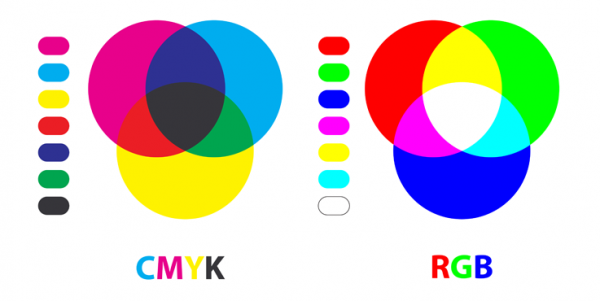

Wat zijn kleurmodellen?
rgb kleuren Is een afkorting van de primaire kleuren: Rood, Groen en Blauw. Kom je voornamelijk tegen op beeldschermen, zoals bij je telefoon, fototoestel en computers- en televisieschermen. Dit kleurmodel wordt ook wel een additief kleurmodel genoemd. De basis van dit model is kleurloos en de kleuren worden gevormd wanneer er licht aan toe wordt gevoegd. Om die reden is een beeldscherm dat uistaat zwart.
Soorten kleurmodellen.
Er zijn drie belangrijke kleurmodellen. RGB (Rood, Groen, Blauw), CMYK (Cyaan, Magenta, Yellow, Key) en Pantone.
RGB
Het RGB kleurmodel kom je over het algemeen het meest tegen op beeldschermen. Denk aan televisies of een monitor. Het RGB kleurmodel is additief. Dit betekent dat de basis zwart is, zoals in een uitgeschakelde televisie. Om kleuren weer te geven wordt hier licht aan toegevoegd, waarbij de verschillende kleuren een andere intensiteit kunnen hebben om de juiste kleur weer te kunnen geven.
CMYK
Dit is het kleurmodel dat wordt gebruikt voor drukwerk. CMYK is een subtractieve kleurmodus. Dit houdt in dat de basis bestaat uit alle kleuren van het kleurenspectrum, wit dus. Kleuren die hier vervolgens op worden gedrukt nemen het reflecterende licht weg, waardoor de kleur zichtbaar wordt. Door het combineren van Cyaan, Magenta, Yellow en zwart kunnen kleuren als het ware na worden gebootst. In vergelijking met RGB, heeft CMYK een veel kleiner kleurbereik, er kunnen dus minder kleuren mee worden gemaakt. Dit is ook de reden waarom drukwerk er wat grauwer uit ziet dan op een monitor.
